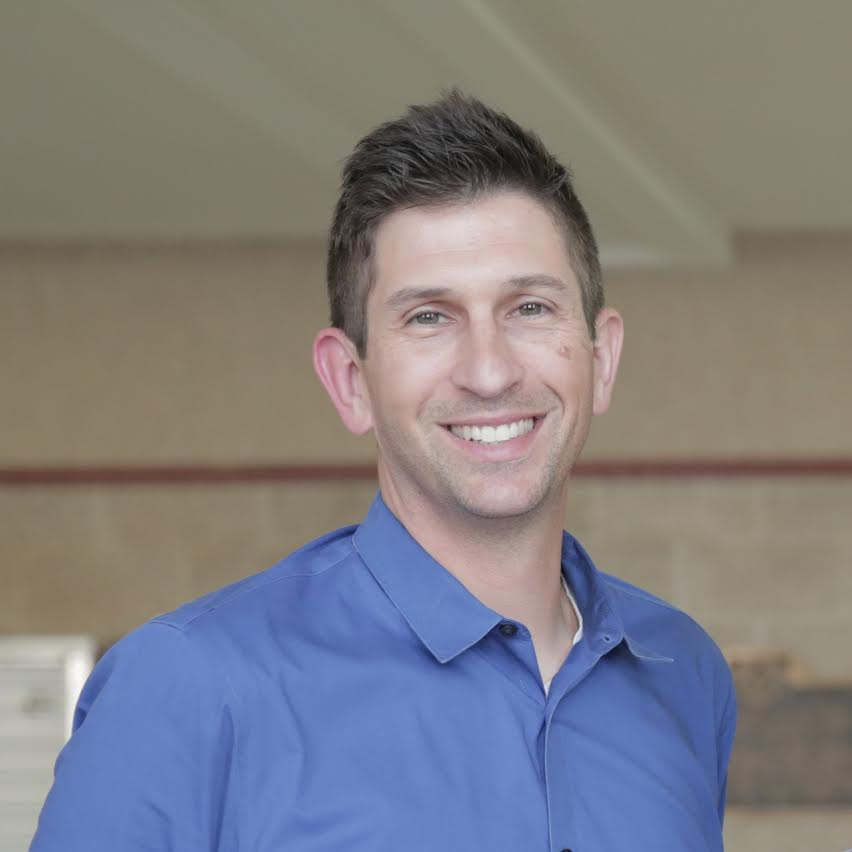
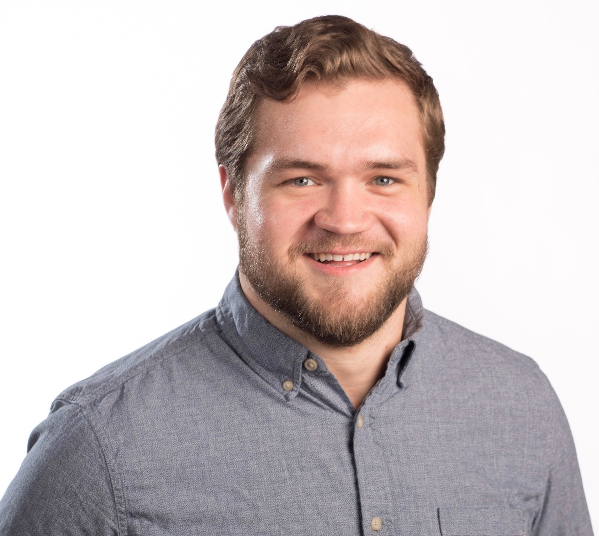

<section class="text-center section-padding about" id="judges">
    <div class="container">
        <div class="row">
            <div class="col-md-5 col-md-offset-1 judge">
                
                <h2>Steve Halter</h2>
                <span>Senior Director of Engineering at Qualcomm</span>
                <p>Senior Director of Engineering at Qualcomm since 2010, Steve Halter has been with Qualcomm for almost twenty years. He’s supported the digital hardware design of various modem, DSP and SoC IP. Halter has served as a judge for the Qualcomm
                    Innovation Competition at UW for the past 2 years, but, this year, Transcend is excited to host him as a judge for Transcend Madison 2017.
                </p>
            </div>
            <div class="col-md-5 judge">
                
                <h2>Heather Wentler</h2>
                <span>Executive Director at The Doyenne Group</span>
                <p>
                    Heather Wentler graduated from UW-Whitewater with a Bachelor of Arts in Elementary Education. After teaching professionally during college and post graduation, she realized working in the traditional classroom was not where she belonged.
                    Heather pivoted into entrepreneurship in 2011 by launching Fractal and Madison SOUP, ultimately co-founded Doyenne Group in 2012. Doyenne provides professional development programming, connections into the larger community, and funding initiatives for women entrepreneurs based in Wisconsin.
                </p>
            </div>
        </div>
        <div class="row">
            <div class="col-md-5 col-md-offset-1 judge">
                
                <h2>Ben Stanley</h2>
                <span>Director of gBETA Milwaukee at gener8tor</span>
                <p>Ban Stanley is the Director of gBETA Milwaukee, a free, six-week accelerator for early-stage companies. Each program is capped at five teams, and requires no fees and no equity. gBETA is a program of gener8tor, a nationally ranked startup accelerator.

                   Stanley joined the gener8tor team after a four-year career in journalism. Most recently, he covered the Milwaukee startup community and health care industry for BizTimes Milwaukee, a bi-weekly business magazine. Stanley graduated from Marquette University with degrees in Journalism and English in 2013.
                </p>
            </div>
            <div class="col-md-5 judge">
                
                <h2>Jillana Peterson</h2>
                <span>Corporate Social Responsibility team at Zendesk</span>
                <p>While pursuing Bachelor of Arts degrees in International Studies and Scandinavian Studies at the University of Wisconsin – Madison, Jillana (Jill) Peterson was exposed to the tech world through several years working the Division of Information Technology Help Desk. In 2013, Peterson joined Zendesk, a Danish software company now headquartered in San Francisco. Since she joined the company, the Madison office has grown from 5 to 170 employees, went public, and started the Zendesk Neighbor Foundation. As a member of Zendesk’s Corporate Social Responsibility team, Jill helps manage Foundation grants, employee volunteer opportunities and partnerships and projects with area nonprofits and startups.
                </p>
            </div>
        </div>
    </div>
    </div>
</section>
